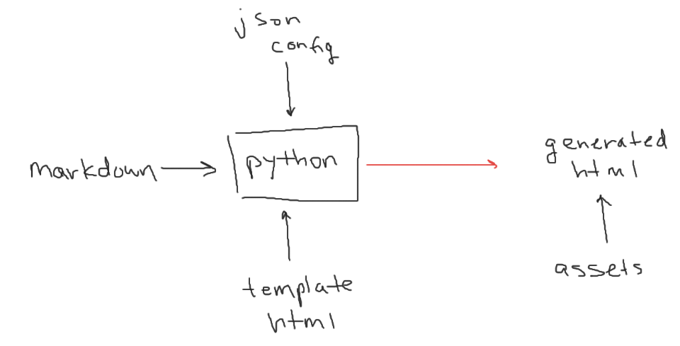

I wanted to create a personal site to contain my projects along with the steps I took to create them. I wanted to be able to:
Massive credit to Supercip971 on github. He (?) has a great personal blog as well as an article on how he did it.
I used his method of converting markdown and config files to html. I also used the same styling he did (the css file I used is straight from him).
I used pypandoc to convert markdown to html. This is used to convert blog articles written in markdown to html. It’s what Supercip971 used and it’s the only library I could find that satisfactorily converted markdown to html.
There is another library called python-markdown, but it does not properly create html for codeblocks.
The final html for this site is dynamically generated from:
These 3 sources are fed to a python script, which uses the json and markdown files to fill the templated html. This is better visualized as:

Let’s take a closer look at the templated html and json config files. Throughout the template, there are lines that look like:
<!-- ... html above ... -->
<h1> {{ title }} </h1>
<!-- .. more -->
<p> {{ date }} </p>
<!-- ... html below ... -->“title” and “date” are both keys that are meant to be replaced. Keys are surrounded by double brackets. Looking at the json config file:
Our keys “title” and “date” are defined with values “new blog!” and “2 May 2021” respectively. Given this json config file and the templated html, the python script will find keys and replace them with the values defined in the json file to generate the final html. Our final html will look like:
<!-- ... html above ... -->
<h1> new blog! </h1>
<!-- .. more -->
<p> 2 May 2021 </p>
<!-- ... html below ... -->Templated html will also have sections that contain:
where [[content]] will be replaced with html generated from markdown. For example, This is used for blog article html where the article itself is created in markdown and then converted to html via pypandoc.
I deployed the site with github actions.
It’s been a while so my python code is probably trash. However, I’m very satisfied with the result. I’ve tried many times to create a personal site, but I was never happy with the result.
Now, I have a platform to link projects and talk about how I built them. Moreover, I didn’t have to learn some esoteric js framework!